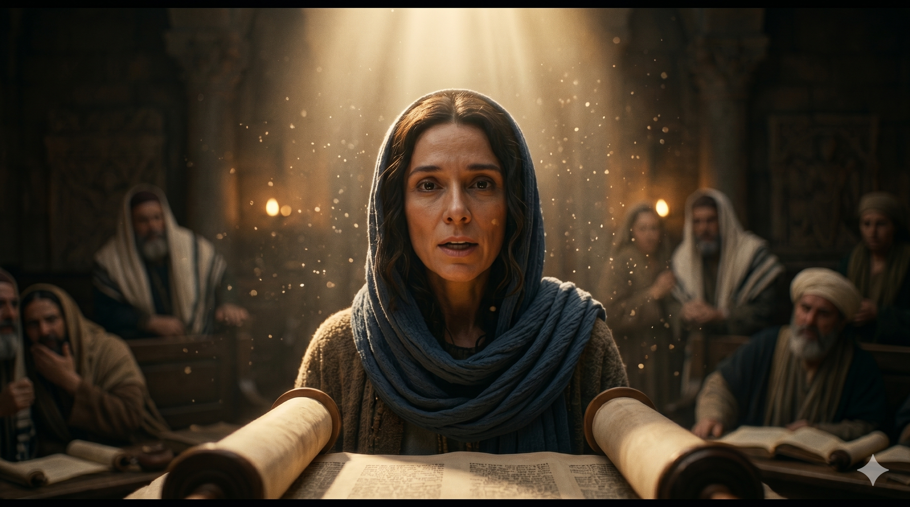

돌기둥이 늘어선 고대 유대 회당 안에서 스데반이 홀로 서서 무리를 향해 담대하게 말씀을 전하는 장면 — 그의 얼굴에는 성령의 빛이, 맞은편 사람들의 얼굴에는 당혹감과 분노가 교차한다
"하나님의 말씀이 점점 왕성하여 예루살렘에 있는 제자의 수가 더 심히 많아지고 허다한 제사장의 무리도 이 도에 복종하니라 스데반이 은혜와 권능이 충만하여 큰 기사와 표적을 민간에 행하니 이른바 자유민 회당 곧 구레네인, 알렉산드리아인, 길리기아와 아시아에서 온 사람들의 회당에서 어떤 자들이 일어나 스데반과 더불어 논쟁할새 스데반이 지혜와 성령으로 말함을 그들이 능히 당하지 못한지라" — 사도행전 6:7-10
사도행전 6장은 예루살렘 교회가 눈부신 성장의 한가운데 있음을 보여 주는 동시에, 새로운 위기의 씨앗이 뿌려지는 장면을 담고 있습니다. 누가는 "하나님의 말씀이 점점 왕성하여"라는 말로 시작합니다. 이것은 단순한 숫자의 증가가 아닙니다. 말씀 자체가 살아 있는 생명력으로 공동체 안에 퍼져 나갔다는 의미입니다. 놀라운 것은 "허다한 제사장의 무리도 이 도에 복종하니라"는 구절입니다. 예수님을 십자가에 넘긴 종교 지도자들의 계층에서까지 회심자가 나오고 있었습니다. 이것이 복음의 능력입니다.
스데반은 이 성장의 흐름 안에서 두드러지게 등장합니다. 그는 집사로 택함을 받은 사람이었지만, 그의 활동은 단순한 구제 행정에 머물지 않았습니다. "은혜와 권능이 충만하여 큰 기사와 표적을 민간에 행하니"—그는 성령의 역사를 직접 드러내는 사람이었습니다. 특히 자유민 회당—디아스포라 유대인들의 회당—에서 벌어진 논쟁은 스데반의 지혜가 어디서 오는지를 선명하게 드러냅니다. 그들이 "능히 당하지 못하였다"는 표현은 논쟁의 수위를 보여 줍니다. 이것은 인간적인 논리의 승리가 아니라 성령이 주시는 지혜의 역사였습니다.

스데반이 논쟁에서 말을 마치자 침묵하는 회당 안의 무리들 — 분노와 당혹감이 뒤섞인 그들의 표정 너머로 진리의 빛이 스민다
스데반의 지혜는 오랜 준비와 학식에서만 나온 것이 아닙니다. 그것은 성령 충만에서 흘러나왔습니다. 오늘 우리도 때로 신앙 때문에 어려운 질문을 받거나 도전을 받을 때가 있습니다. 논리로 반박할 수 없을 것 같은 상황, 말문이 막히는 순간들이 있습니다. 그때 스데반을 기억하십시오. 그는 회당에서 혼자 맞섰지만, 그 안에 성령이 함께 계셨습니다. 우리가 말씀을 가까이하고 기도로 성령을 구할 때, 하나님은 우리에게 필요한 지혜를 때를 따라 공급해 주십니다.
또한 이 본문은 성장의 아름다움 안에 긴장과 갈등이 함께 있음을 보여 줍니다. 말씀이 왕성할수록 반발도 커집니다. 제사장들이 복음 앞에 무릎을 꿇는 놀라운 장면 다음에, 스데반을 향한 논쟁과 박해가 시작됩니다. 신앙의 길에서 우리가 맞닥뜨리는 저항은 우리가 잘못된 길을 가고 있다는 신호가 아니라, 때로는 제대로 가고 있다는 증거일 수 있습니다.
그들이 당할 수 없었던 것은 스데반의 말솜씨가 아니라 성령의 지혜였습니다.
오늘 당신이 진리를 말해야 할 자리가 있습니까?
인간의 준비보다 성령의 충만함을 먼저 구하십시오.